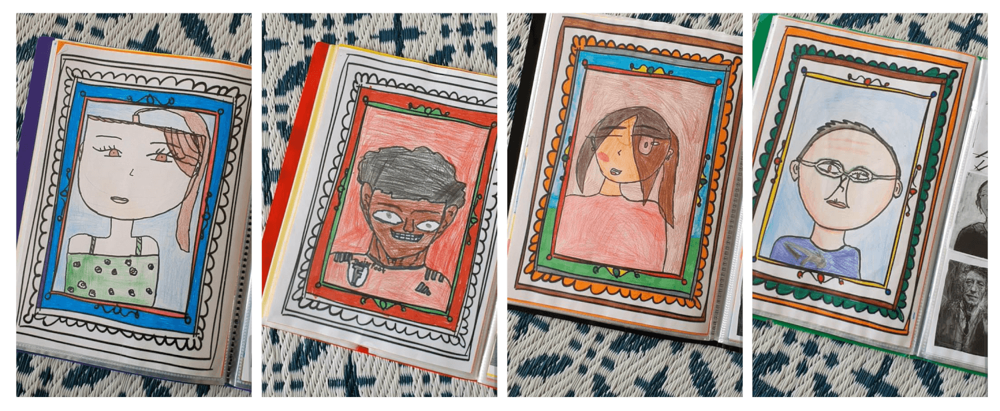

Pour cette activité d'art visuel, j'ai proposé aux élèves de créer des autoportraits dans un cadre pré-imprimé. L'objectif était double : travailler l'observation de soi et développer la minutie dans le coloriage.
Les consignes étaient simples et précises :
J'ai remarqué que certains élèves ont tendance à colorier rapidement et de façon peu soignée. Nous avons donc pris le temps d'observer collectivement chaque réalisation et d'ajuster les techniques.
Ce moment d'observation collective est précieux : les élèves apprennent à regarder le travail des autres, à identifier ce qui fonctionne bien, et à appliquer ces observations à leur propre création.
Je n'ai malheureusement pas photographié les productions finales (il faudra me croire sur parole !), mais les autoportraits sont magnifiques. Chaque élève a su capturer sa personnalité tout en travaillant la précision du geste.
Ces autoportraits décorent maintenant notre classe et rappellent à chacun l'importance du soin apporté à son travail.